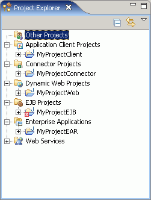

While developing J2EE applications in the J2EE perspective, the
Project Explorer view is your main view of your J2EE projects and resources.
Project Explorer view
The Project Explorer view provides
an integrated view of all project resources, including models of J2EE deployment
descriptors, Java™ artifacts, resources, Web services, databases,
and dynamic Web project artifacts.
You should use this view to work with
your J2EE deployment descriptors and their content. You can easily view an
enterprise application project and see all of the modules associated with
it.
The following image shows the Project Explorer view with the Group
projects by type option selected in the toolbar:

- Enterprise Applications
- Shows a hierarchical model of all enterprise application projects.
- Application Client Projects
- Shows a hierarchical model of all application client modules.
- Connector Projects
- Shows a hierarchical model of all connector modules.
- Dynamic Web Projects
- Shows a hierarchical model of all dynamic Web modules.
- EJB Projects
- Shows a hierarchical model of all EJB projects.
- Other Projects
- Shows any non-J2EE module projects, such as Java projects. These Java projects
can be any of the following types:
- Utility projects for existing Enterprise Application projects in your
workspace
- EJB Client JAR Projects, which include the client interface classes (remote,
home, local, or local home interfaces) for beans in EJB projects
- Java projects
that are in your workspace but unrelated to your J2EE development